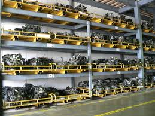

Frigocommerce International Ltd. was established in 2002. The company has inherited and extended the activities of the company Kameo Ltd., active since 1990 and an established prime importer and distributor of spare parts and consumables for the refrigeration and air-conditioning industries in Bulgaria

Our primary focus is on the import and distribution of refrigeration equipment and the entire range of spare parts, consumable goods and tools which are used in refrigeration and air-conditioning - compressors for domestic refrigerators, commercial hermetic and and scroll refrigeration compressors, rotary, hermetic and scroll air-conditioning compressors, semi-hermetic compressors, refrigerating and air-conditioning condensing units, axial and tangential fans, air-cooled condensers, air-coolers for cold rooms, heat-exchangers freon-water, solenoid valves, thermo-static expansion valves, pressure controls, electronic and capillary thermostats, data loggers for the monitoring of cold rooms, electronic controllers and software for supermarket controls, multi-compresor plant controllers, protecting relays for monophase and 3-phase compressors, no-frost timers, refrigerant receivers, oil separators, liquid separators, refrigeration filters, copper-phosphorous and silver welding alloys, copper pipes, compressor oils, refrigerant gases, various tools - vacuum pumps, electronic weight scales, charging manifolds, manometers, tubing tools kits, welding tools, measurement tools and many more. In addition to parts for refrigeration systems, we also offer quality air-conditioning systems at affordable prices - conventional and inverter split-system air-conditioners, fan coils water-air for wall, floor or ceiling installation, and heat pumps air-water. We also provide calculation, design and delivery of equipment for cold rooms for freezing and storing food products and of installations for the cooling of water, wine, milk and other liquids. Our company is certified per ISO 9001.
Our long history, our contacts with many renowned manufacturers in Europe, Asia and America and our constant strivings to find alternative sources of products so that we can provide quality goods at the most affordable prices allow us to be the preferred supplier for the majority of manufacturers, importers and repair companies for refrigeration and air-conditioning installations in Bulgaria, as well as to export many of our products to Romania, Ukraine, Macedonia, Serbia, Montenegro, South Korea, Cyprus, Tunisia, Great Britain, Italy, Taiwan, USA, Russia and others.